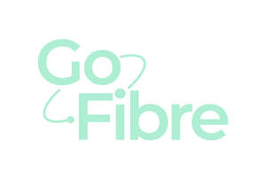
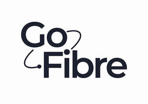

Trade Mark Journal No.2025/037 12 September 2025
UK00004203859 15 May 2025 (9,37,38,42)
Mark 1
Mark 2

Mark 3
Mark 4

- Class 9
- Scientific, research, navigation, surveying, photographic, cinematographic, audiovisual, optical, weighing, measuring, signalling, detecting, testing, inspecting, life-saving and teaching apparatus and instruments; apparatus and instruments for conducting, switching, transforming, accumulating, regulating or controlling the distribution or use of electricity; apparatus and instruments for recording, transmitting, reproducing or processing sound, images or data; recorded and downloadable media, computer software, blank digital or analogue recording and storage media; mechanisms for coin-operated apparatus; cash registers, calculating devices; computers and computer peripheral devices; diving suits, divers' masks, ear plugs for divers, nose clips for divers and swimmers, gloves for divers, breathing apparatus for underwater swimming; fire-extinguishing apparatus; internet access software; telecommunications software; communications apparatus; communication hubs; communications equipment; communications networks; communications apparatus; communication hubs; communications equipment; communications networks; communications instruments; telecommunications transmitters; telecommunications networks; telecommunications instruments; telecommunication apparatus; telephone apparatus; electronic communication installations; mobile telecommunication apparatus; signal transmission apparatus; data transmission apparatus; satellite transmission apparatus; signal transmission apparatus; data transmission apparatus; satellite transmission apparatus; apparatus for transmission of communication; signalling instruments; digital transmitters; sensors; security control apparatus; security surveillance apparatus; safety, security, protection and signalling devices; peripherals adapted for use with computers and other smart devices; vehicle tracking apparatus; navigation, guidance, tracking, targeting and map making devices sensors; telecommunications cables; network cables; broadband installations; internet phones; VOIP phones; electronic communication installations; mobile telecommunication apparatus; data transmission cables; optical cables; electrical and electronic instruments for the reception of data; data transmission networks; computer application software; application software for smart tv; satellites for signal transmission; aerials for telecommunications networks; data transmission cables; satellites for signal transmission; electronic security systems for home network; security software, cameras and alarms; surveillance cameras; security cameras; digital sensors; alarm sensors; motion detectors; computer software for the creation of firewalls; business intelligence software; security software; antivirus software; privacy software; parts and fittings for the aforesaid goods.
- Class 37
- Construction services; Installation and repair services; Charging of batteries and power storage devices, and rental of equipment therefore; Rental of tools, plant and equipment for construction, demolition, cleaning and maintenance; Installation, maintenance and repair of broadband equipment and connections; Installation of cables for Internet access; Installation of hardware for Internet access; Installation of wireless telecommunications equipment and wireless local area networks; Installation, maintenance and repair of wireless telecommunications equipment and wireless local area networks; Installation, maintenance and repair of telecommunications equipment and networks; Information, advice and consultancy in relation to all the aforesaid services.
- Class 38
- Telecommunications services; telephone communications; communication services; digital communication services; transmission of digital information; internet communication; internet communication services; mobile communication; mobile communication services; telecommunication network services; electronic network communications; satellite capacity provision [telecommunications]; data transmission; cable transmission; broadcasting services; wireless communications services; digital network telecommunications services; provision of access to content, websites and portals; telecommunication services provided via internet platforms and portals; message transmission services; secure transmission of data, sound or images; hire of telecommunications installations; provision of broadband telecommunication access; internet broadcasting services; providing access to the internet and other communications networks; wireless broadband communication services; optical fibre telecommunications services; provision of broadband telecommunications access; transmission of telephone calls; Voice over Internet Protocol [VoIP] services; Voice over Internet Protocol [VoIP] communication services; provision of telecommunications connections to the internet or computer databases; electronic mail, message sending; data streaming services; digital transmission of data; telecommunication of information (including web pages); provision of telecommunications links to computer databases and websites on the internet; information, consultancy and advisory services relating to the aforesaid services.
- Class 42
- Scientific and technological services and research and design relating thereto; industrial analysis, industrial research and industrial design services; quality control and authentication services; design and development of computer hardware and software; software installation; software creation; software engineering; software research; software design; software development; updating of software; software customisation services; computer software maintenance; maintaining databases; database design; data security services; maintenance of websites; computer services; computer advisory services; computer programming; installation of computer programs; development of computer software; software development, programming and implementation; development and testing of software; custom design of software packages; it security, protection and restoration; it consultancy, advisory and information services; IT services; technical data analysis; computer software installation; computer software integration; electronic storage of data; updating of software for communication systems; hosting of platforms on the internet; hosting of communication platforms on the internet; maintenance and updating of software for communication systems; custom design and engineering of telephony systems, cable television systems and fiber optics; computer security system monitoring services; environmental testing; internet security consultancy; installation of internet access software; information, consultancy and advisory services relating to the aforesaid services.
GoFibre Holdings Limited
Representative: Stobbs